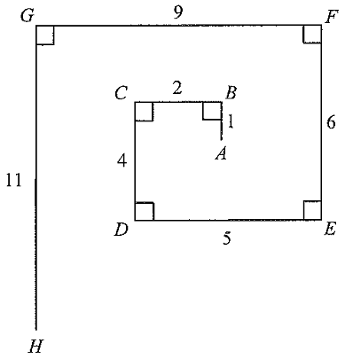

In the figure, the length of the line segment joining \(A\) and \(H\) is

Take the outer square with \(E=(0,0)\), \(D=(6,0)\), \(G=(0,6)\), \(F=(6,6)\) (side \(6\)).
The inner square sits inside with side \(1\). Reading the figure: \(A\) is on the lower side of the small square and \(B\) on the upper side,
with \(AB=1\) (vertical), and the horizontal offset from the left edge \(C\) gives \(BC=2\).
The four small right-angle marks confirm both squares are axis-aligned.
Going from the outer-left edge to the inner square: \(CD=4\),
so the inner square's left edge is \(4\) units from \(D\).
Inside, \(BC=2\) gives the horizontal span from \(C\) to \(B\). The horizontal gap from \(B\) to the far right (through \(A\)) is \(1\).
Check: \(4+2+1=7\) is not needed — instead we compare edges directly using the directed-distance formula.
Horizontal separation of endpoints:
$$AB - CD + EF - GH = 1 - 4 + 6 - 11 = -8$$The magnitude is \(8\),
matching the left–right gap between \(A\) and \(H\) in the figure.
Vertical separation of endpoints:
$$-BC + DE - FG = -2 + 5 - 9 = -6$$The magnitude is \(6\),
matching the top–bottom gap between \(A\) and \(H\).
With the two perpendicular offsets \(8\) and \(6\):
$$AH=\sqrt{(-8)^2+(-6)^2}=\sqrt{64+36}=\sqrt{100}=10$$Substituting the given values in one line, as in the official solution:
$$AH=\sqrt{(AB-CD+EF-GH)^2+(-BC+DE-FG)^2}$$ $$=\sqrt{(1-4+6-11)^2+(-2+5-9)^2}=\sqrt{(-8)^2+(-6)^2}=10$$Question. In a rectangular coordinate plane, \(A\) lies \(12\) units to the left of and \(5\) units above \(H\). Find the distance \(AH\).